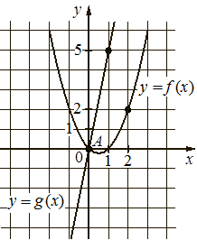

historical_editorial50
Предварительные разборы, внешнего эталона нет.
На рисунке изображены графики функций и пересекающиеся в точках и Найдите абсциссу точки

{
"complete": true,
"included": true,
"exclusion_reasons": [],
"author_mode": "historical_shared_context",
"author_path": null,
"auditor_path": null,
"feedback_ref": null,
"source_run": "data/annotation/runs/2026-10-31-fipi-50x1"
}{
"task_id": "DDA73A",
"solution_status": "solved",
"answer": "6",
"steps": [
{
"id": "s1",
"action": "Считать характерные точки графиков",
"result": "Парабола пересекает Ox при x=0 и x=1 и проходит через (2;2); прямая g проходит через (0;0) и отмеченную точку (1;5).",
"kc_ids": [
"k1"
],
"input_refs": [
"condition"
]
},
{
"id": "s2",
"action": "Восстановить формулы по корням и отмеченным точкам",
"result": "f(x)=a x(x-1); из f(2)=2 следует a=1. Для g(x)=kx из g(1)=5 получаем k=5. Значит f=x²-x,g=5x.",
"kc_ids": [
"k2",
"k3"
],
"input_refs": [
"s1"
]
},
{
"id": "s3",
"action": "Приравнять значения и решить уравнение пересечения",
"result": "x²-x=5x ⇒ x(x-6)=0 ⇒ x=0 или x=6. Точка A имеет x=0, поэтому B имеет абсциссу 6.",
"kc_ids": [
"k4",
"k5"
],
"input_refs": [
"condition",
"s1",
"s2"
]
}
],
"kc_candidates": [
{
"id": "k1",
"name": "Считывать координаты отмеченной точки с графика",
"description": "По масштабу и осям декартовой сетки определить координаты отмеченных точек и видимых пересечений с осью; не восстанавливать точные значения по непомеченному эскизу."
},
{
"id": "k2",
"name": "Восстанавливать квадратную функцию по нулям и точке",
"description": "Использовать f(x)=a(x-r1)(x-r2) для известных нулей и найти ненулевой коэффициент по дополнительной точке вне нулей."
},
{
"id": "k3",
"name": "Восстанавливать прямую пропорциональность по точке",
"description": "Для y=kx найти k по точке с ненулевой абсциссой; свободный член равен нулю по заданной форме функции."
},
{
"id": "k4",
"name": "Сводить пересечение графиков к равенству значений",
"description": "Для графиков y=f(x) и y=g(x) при общей абсциссе составить f(x)=g(x), сохраняя области определения."
},
{
"id": "k5",
"name": "Решать уравнение через нулевое произведение",
"description": "Разложить выражение в произведение и объединить решения уравнений о нуле каждого множителя, сохраняя область определения."
}
],
"methods": [
{
"id": "m1",
"name": "Восстановить функции и найти вторую точку пересечения",
"step_ids": [
"s1",
"s2",
"s3"
]
}
],
"warnings": []
}null
[
{
"task_id": "DDA73A",
"local_id": "k1",
"canonical_id": "graph_coordinates",
"decision_basis": "explicit_editorial_operation_group",
"source_name": "Считывать координаты отмеченной точки с графика",
"source_description": "По масштабу и осям декартовой сетки определить координаты отмеченных точек и видимых пересечений с осью; не восстанавливать точные значения по непомеченному эскизу.",
"evidence": [
{
"step_id": "s1",
"action": "Считать характерные точки графиков",
"result": "Парабола пересекает Ox при x=0 и x=1 и проходит через (2;2); прямая g проходит через (0;0) и отмеченную точку (1;5)."
}
]
},
{
"task_id": "DDA73A",
"local_id": "k2",
"canonical_id": "literal_6241f0b09502",
"decision_basis": "identical_name_and_description_only",
"source_name": "Восстанавливать квадратную функцию по нулям и точке",
"source_description": "Использовать f(x)=a(x-r1)(x-r2) для известных нулей и найти ненулевой коэффициент по дополнительной точке вне нулей.",
"evidence": [
{
"step_id": "s2",
"action": "Восстановить формулы по корням и отмеченным точкам",
"result": "f(x)=a x(x-1); из f(2)=2 следует a=1. Для g(x)=kx из g(1)=5 получаем k=5. Значит f=x²-x,g=5x."
}
]
},
{
"task_id": "DDA73A",
"local_id": "k3",
"canonical_id": "direct_proportion",
"decision_basis": "explicit_editorial_operation_group",
"source_name": "Восстанавливать прямую пропорциональность по точке",
"source_description": "Для y=kx найти k по точке с ненулевой абсциссой; свободный член равен нулю по заданной форме функции.",
"evidence": [
{
"step_id": "s2",
"action": "Восстановить формулы по корням и отмеченным точкам",
"result": "f(x)=a x(x-1); из f(2)=2 следует a=1. Для g(x)=kx из g(1)=5 получаем k=5. Значит f=x²-x,g=5x."
}
]
},
{
"task_id": "DDA73A",
"local_id": "k4",
"canonical_id": "graph_intersection",
"decision_basis": "explicit_editorial_operation_group",
"source_name": "Сводить пересечение графиков к равенству значений",
"source_description": "Для графиков y=f(x) и y=g(x) при общей абсциссе составить f(x)=g(x), сохраняя области определения.",
"evidence": [
{
"step_id": "s3",
"action": "Приравнять значения и решить уравнение пересечения",
"result": "x²-x=5x ⇒ x(x-6)=0 ⇒ x=0 или x=6. Точка A имеет x=0, поэтому B имеет абсциссу 6."
}
]
},
{
"task_id": "DDA73A",
"local_id": "k5",
"canonical_id": "zero_product",
"decision_basis": "explicit_editorial_operation_group",
"source_name": "Решать уравнение через нулевое произведение",
"source_description": "Разложить выражение в произведение и объединить решения уравнений о нуле каждого множителя, сохраняя область определения.",
"evidence": [
{
"step_id": "s3",
"action": "Приравнять значения и решить уравнение пересечения",
"result": "x²-x=5x ⇒ x(x-6)=0 ⇒ x=0 или x=6. Точка A имеет x=0, поэтому B имеет абсциссу 6."
}
]
}
]{
"included": true,
"exclusion_reasons": [],
"source_policy_included": true,
"source_policy_exclusion_reasons": []
}